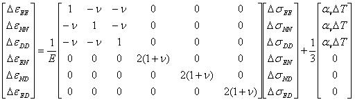

A linear isotropic relationship between effective stresses s and strains e applies according to Hooke's law. In elastic models the deformation history is not taken into account. Two parameters should be defined in this model: The Young’s modulus E for the material stiffness and the Poisson’s ratio n for the contraction ratio of the material.
The subscripts E, N and D represent East, North and depth respectively.
If temperature changes during the analysis the expansion (or contraction) due to the temperature change can be taken into account. The user must supply the Volumetric Thermal Expansion Coefficient av, which is defined as the change in volume per unit volume per temperature change: (DV/V)/DT with units [m3/m3/°C] or [°C-1] or [K-1],
The Volumetric Thermal Expansion is three times the Linear (1D) Thermal Expansion Coefficient a1 in [m/m/°C].

SHtot/Svtot; Shtot/Svtot, SHtot-azimuth
Initial stress field (after gravity loading). SHtot/Svtot [-] is the highest horizontal/vertical stress ratio. SHtot-azimuth [degrees] is the clockwise angle (degrees) between the SHtot direction and the Northing. Shtot/Svtot is the lower minimal stress ratio [-], perpendicular to the SHtot direction.
r (density [kg/m3])
Bulk density for gravitational calculations.
av (Volumetric Thermal Expansion Coefficient [°C-1 or K-1]
Relative volumetric expansion per degree temperature change. The value is three times the linear expansion coefficient, sometimes provided for solids.
See Nonlinear material for background theory of nonlinear materials